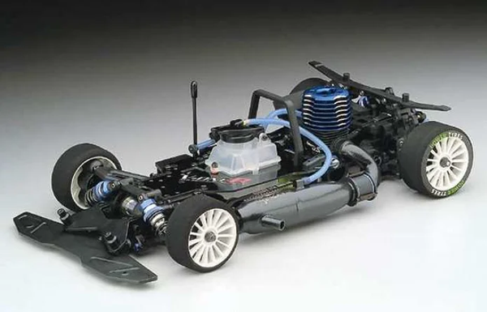

京商 V-One RR Evolution

引用元画像：rcscrapyard.net
📋 基本情報
| メーカー | 京商（Kyosho） |
|---|---|
| 機種名 | V-One RR Evolution（ブイワン・ダブルアール・エボリューション） |
| シャーシ略称 | V-One RR Evo |
| 型番 | 31255 |
| 発売時期 | 2003年 |
| 価格 | ¥41,800（税込） |
| 生産状況 | 生産終了 |
| カテゴリー | ラジコンカー（1/10スケール GPツーリングカー） |
| サブカテゴリー | PureTen GP 4WD ツーリングカー |
| シリーズ | V-Oneシリーズ |
📏 シャーシスペック
| シャーシ構造 | ダブルデッキ 3mmアルミプレートシャーシ |
|---|---|
| 全長 | 詳細不明 |
| 全幅 | 詳細不明 |
| 全高 | 詳細不明 |
| ホイールベース | 詳細不明 |
| トレッド | 詳細不明 |
| 全備重量 | 詳細不明 |
⚙️ 駆動系
| 駆動方式 | ベルトドライブ 4WD |
|---|---|
| トランスミッション | 2スピードトランスミッション |
| デフギヤ | ギヤデフ（前後） |
| フロントワンウェイ | 標準装備 |
| ドライブシャフト | ドッグボーンドライブシャフト |
| ベアリング | フルベアリング仕様 |
| エンジン | 別売り（12-15クラスエンジン推奨） |
🔧 サスペンション
| 形式 | 4輪ダブルウィッシュボーン独立懸架 |
|---|---|
| ダンパー | コイルスプリング＋オイルダンパー×4本 |
| アンチロールバー | 標準装備（前後） |
| ステアリング | 詳細不明 |
💡 特徴
V-One RRの進化版として登場
- 2001年のV-One RRをベースに進化させた2003年モデル
- ダブルデッキ3mmアルミプレートシャーシで高剛性設計
- V-One RRRへの進化の基礎となったモデル
レーシング志向の駆動系
- ベルトドライブ4WD：効率的な駆動伝達
- 2スピードトランスミッション標準装備：コース対応力向上
- フロントワンウェイ搭載：コーナリング時の安定性向上
- ギヤデフ（前後）：メンテナンス性良好
- ドッグボーンドライブシャフト：耐久性に優れる
高いセッティング対応力
- アンチロールバー（スタビライザー）標準装備（前後）
- オイルダンパー×4本：ダンパーオイル粘度調整可能
- コイルスプリング：レート変更でセッティング幅拡大
- フルベアリング仕様：走行抵抗最小化
V-One RRRへの進化の礎
- 2004年のV-One RRRへと進化する基礎モデル
- ダブルデッキシャーシ設計はV-One RRRに継承
- 2スピードトランスミッションなどのレーシング技術が後継モデルに引き継がれた
🔧 ぽすとそに工房での修理実績
修理難易度
★★★★★（非常に困難）
情報の少なさと、パーツ供給が極端に少ないため、修理が非常に困難です。
よくある故障・注意点
- ベルトドライブ：定期的なベルト張力チェックと交換が必要
- 2スピードトランスミッション：クラッチシューの摩耗に注意
- ギヤデフ：ギヤの摩耗チェックとグリスアップが重要
- オイルダンパー：オイル漏れに注意（Oリング劣化）
- フロントワンウェイ：定期的なメンテナンスが必要
修理のポイント
- パーツ供給が極端に少ないため、入手困難なパーツは代替品検討
- V-One RRRやV-One R4との部品互換性を調査
- ベルトは定期的に交換（劣化すると歯飛びの原因に）
- オイルダンパーのOリング定期交換でオイル漏れ防止
- ギヤデフのグリスアップを定期的に実施
- 2スピードトランスミッションのクラッチシュー摩耗チェック
その他の特徴
- V-One RRの進化版として2003年に登場
- ダブルデッキ3mmアルミプレートシャーシで高剛性
- V-One RRRへの進化の基礎となったモデル
- フロントワンウェイ搭載でコーナリング安定性向上
- 情報が少なく、パーツ供給も極端に少ないため修理難易度は最高レベル